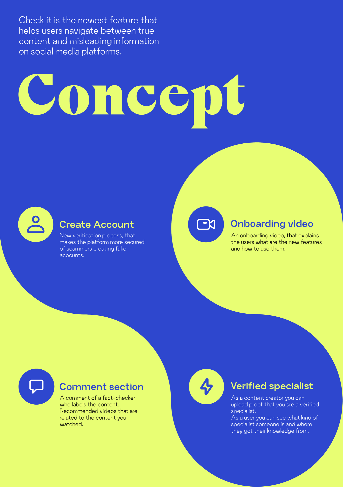
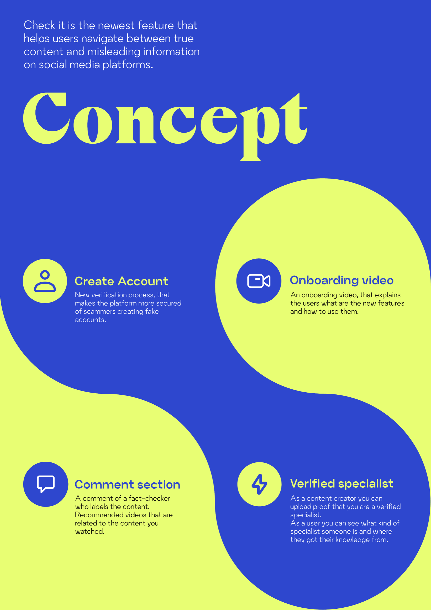

Home > Projecten > Misinformatie op TikTok
Misinformatie op TikTok
De opdrachtgever is Creative Media for Social Change. Ze ontwikkelen creatieve media tools, zoals virtuele omgevingen, bordspellen en interactieve kunstwerken. Ze onderzoeken hoe zij deze effectief kunnen inzetten voor een inclusievere en duurzamere wereld. Creative Media for Social Change is een van de zeven lectoraten en drie bijzonder lectoraten die samen het kenniscentrum FDMCI vormen. Het kenniscentrum is onderdeel van de faculteit Digitale Media & Creatieve Industrie binnen de Hogeschool van Amsterdam.
Het project gaat over hoe mensen momenteel sociale media gebruiken om nieuws en kennis op te doen, maar er wordt veel nepnieuws en desinformatie verspreid in het digitale landschap. De deliverables van dit project waren:
Het doel van het project is om mensen te helpen bij het navigeren door online nieuws en informatie en om hun bewuster te laten worden van wat ze tot zich nemen.
Na uitgebreid onderzoek te hebben gedaan, wat bestond uit desk research, benchmark, een experiment, interviews, en een workshop hebben we een gerichtere probleemstelling geformuleerd. Hierbij hebben wij een 'How Might We' gemaakt: Hoe kunnen we tieners van 14 tot 18 jaar helpen herkennen welke inhoud wel of niet betrouwbaar is op Instagram en Tiktok en de platforms transparanter maken over de waarheid van de inhoud?
Hoe zijn we tot deze design challenge gekomen, en hoe hebben we deze verwerkt in een oplossing? Hieronder zie je twee poster die uitleggen hoe ons proces is gelopen en wat de belangrijkste bevindingen waren tijdens dit proces. Ook zie je hoe ons concept werkt. Onderaan zie je de schermen van ons concept.
 


Onderzoekmethodes
Tools
Het onderzoek bij dit project was erg bepalend voor de richting waarin wij gingen ontwerpen. Daarom leg ik wat onderzoek methodes nog meer uit.
Experiment
Wij (4 personen, verschillende nationaliteiten) hebben 1 week lang onze eigen social media accounts, Instagram en Tiktok, geobserveerd. Ook hebben wij twee nieuwe accounts aangemaakt waarbij wij 16 jaar oud zijn.
De doelen van het observeren van onze eigen social media accounts zijn:
De doelen van het observeren van nieuwe accounts zijn:

Workshop
Eerder was te lezen dat we een museuminterventie in Beeld & Geluid moesten organiseren. Wij hebben ervoor gekozen om daarvoor in de plaats een workshop te organiseren op een school omdat we zo meer onze doelgroep konden bereiken.
Het was een workshop van 1 uur op de internationale school in Haarlem. Wij verdeelde onszelf in twee zodat er twee per klas stonden.
Tools
Bij de tools flowchart, wireframes en UI / High fidelity prototype zit een duidelijk proces, deze leg ik ook nog wat meer uit.
Nadat we verschillende ideation methodes hadden toegepast en alle inzichten van de workshop hebben opgeschreven zijn we tot een concept gekomen. Het is een concept met meerdere onderdelen dus we hebben dit in kaart gebracht met een flowchart per onderdeel. Gebaseerd op de verschillende flowcharts zijn we per onderdeel wireframes gaan maken, hier hebben we gekeken naar hoe Tiktok op dit moment eruit ziet. Zo konden we goed zien hoe de verschillende onderdelen samenwerkte. Na het bespreken van de wireframes zijn we eigenlijk snel doorgegaan naar het maken van een HIFI prototype. Deze hebben we uiteraard getest en hebben er iteratieslagen plaats gevonden.
Hier zie je een pitch video over het concept en hieronder een link naar het prototype.
Werkt mijn product?
Om te weten of mijn product werkt, ga ik de design challenge beantwoorden. De design challenge is de ontwerpvraag die we redelijk aan het begin van het project gemaakt hebben waar het doel van het eindproduct in verwerkt is.
Design challenge: Hoe kunnen we tieners van 14 tot 18 jaar helpen herkennen welke inhoud wel of niet betrouwbaar is op Instagram en Tiktok en de platforms transparanter maken over de waarheid van de inhoud?
Is het nu beter herkenbaar welke inhoud wel of niet betrouwbaar is op Instagram en Tiktok?
Ja dit is een goede eerste stap naar een oplossing om mensen te helpen fake news te herkennen op social media. Dit is te zien doordat we de platforms transparanter maken door aan te geven doormiddel van labels wat voor content nu zichtbaar is. Hierdoor kan de gebruiker zelf beslissen wat ze met de content doen maar wij hebben op zo’n duidelijk mogelijke manier de informatie gegeven op het gebied wat voor content zij nu zien.
Aan het eind van dit project hadden we nog een week om te bedenken wat wij (individueel) nog wilde toevoegen aan het project. Ik heb gekozen om ons onderzoek goed in kaart te brengen omdat ik het onderzoek zo belangrijk vond en omdat het zo uitgebreid was. Wij hebben veel gehad aan ons onderzoek en hebben veel verschillende methodes gebruikt. Wil je hier meer over lezen en zien? Bekijk dan het project: 'Mapping the findings' .